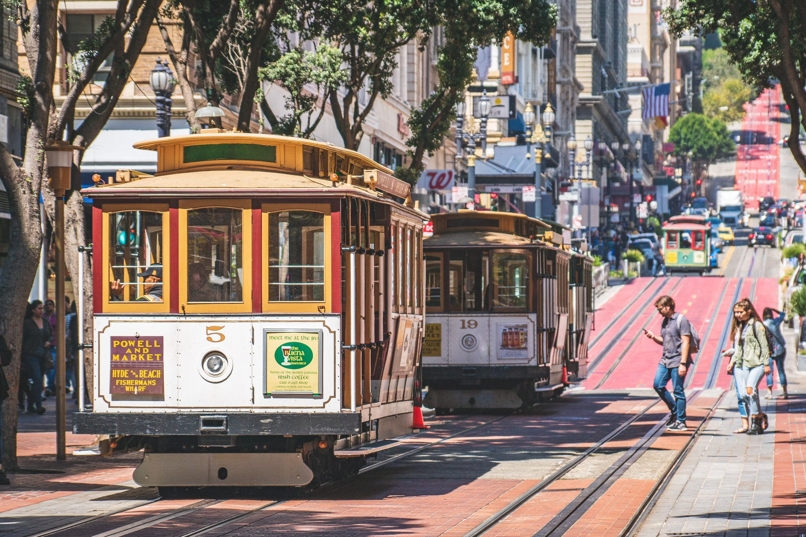
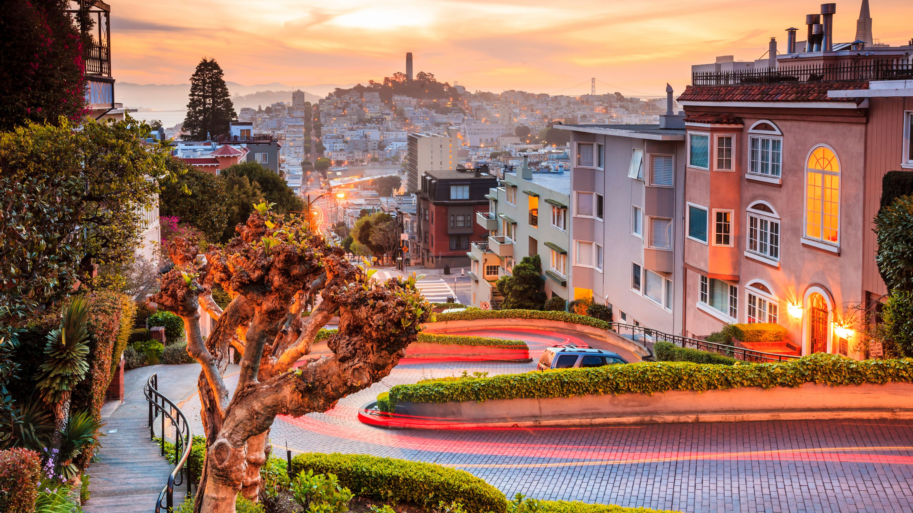
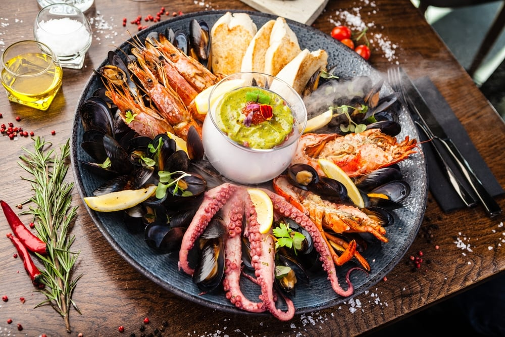
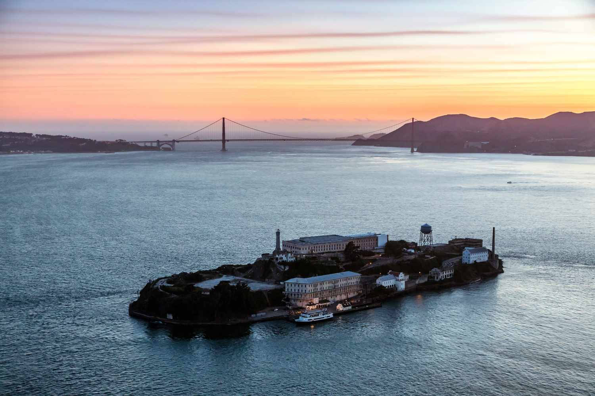
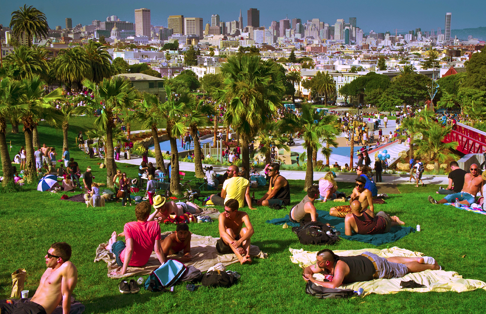

Discover San Francisco

Population
As of 2021, the population of San Francisco sits at 815,201 residents within the city. The Bay Area in general has a population of over 7 million people in nine counties and 101 cities.

Tourism
There are great sight seeing spots where you can overlook the whole Bay Area. There are a variety of things to do in the Bay Area such as riding down Lombard street, visiting a notorious prison on Alcatraz Island, taking a trip through the city in the cable caters or eating some amazing seafood at Pier 39. Every area in San Francisco, has its different personalities. Come and find out for yourself!

Food
There is nothing like the Seafood in San Francisco! Have you ever had a fresh bowl of breaded clam chowder fresh off of a Pier? Now is your chance to try it!

Historical places
This place in particular stands out the most because it is located on an island. The Alcatraz Island was a prison that was home to those who were sent here due to criminal acts and activities. You can actually take a boat trip to this island to visit the infamous area

Age Distribution
Regarding the San Francisco Population from earlier, 450,985 are male while 432,230 are female. Out of the total 39,618 are under 5 years old, 118,684 are under 18 years old, 1764,621 are 18+ years old, and over 138,128 are 65+ years old.